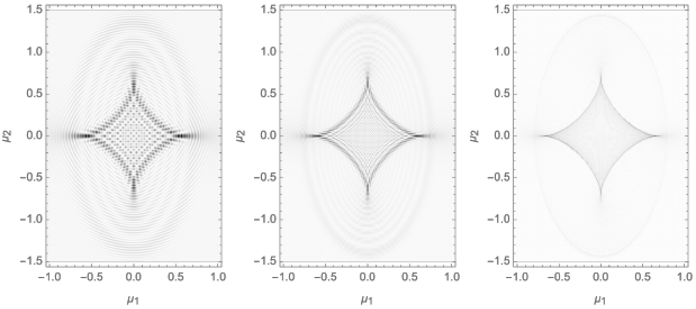

Interference is one of the most universal phenomena in nature. Among the many examples are lensing in optical systems, interference effects in quantum mechanical experiments, and the Lorentzian path integral formulation of quantum physics. However, the corresponding oscillatory (multi-dimensional) integrals are often difficult to define rigorously and can only be evaluated exactly in special cases. Asymptotic approximations are not always applicable to physical phenomena and numerical approximations are often expensive to evaluate due to the many cancelations.
Picard-Lefschetz theory can be used to construct a rigorous definition of the oscillatory integral along the Lefschetz thimble. We only require the analytic continuation of the integrand to be (well approximated by) a meromorphic function. When the Lefschetz thimble is approximated numerically we can moreover efficiently approximate the integral numerically. Remark that the efficiency of the scheme generally improves when the integral becomes more oscillatory.
In this project, we present a new numerical scheme to evaluate (multi-dimensional) oscillatory integrals. We demonstrate the method by studying interference effects near caustics in radio astronomy. This investigation is motivated by the recently observed Fast Radio Bursts. An implementation of the method for one-dimensional oscillatory integrals can be found at my GitHub repository.
This is work in collaboration with Neil Turok and Ue-Li Pen.
Job Feldbrugge. Multi-plane lensing in wave optics. 2020 [arXiv][pdf]
Job Feldbrugge, Neil Turok. Gravitational lensing of binary systems in wave optics. 2020 [arXiv][pdf]
Job Feldbrugge, Ue-Li Pen, Neil Turok. Oscillatory path integrals for radio astronomy. 2019 [arXiv][pdf]
